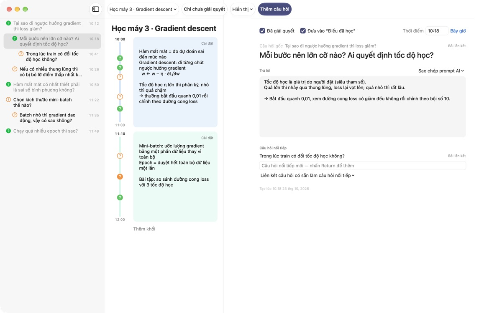
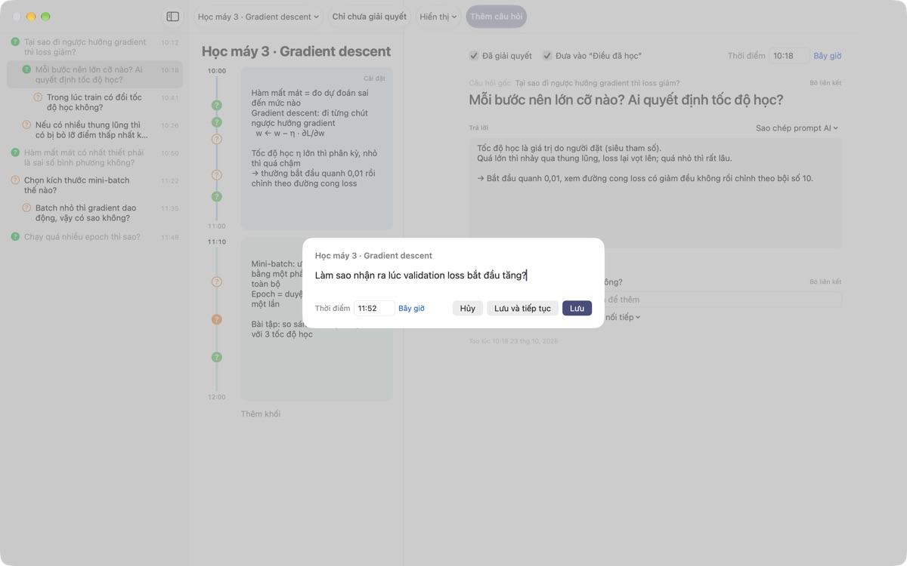
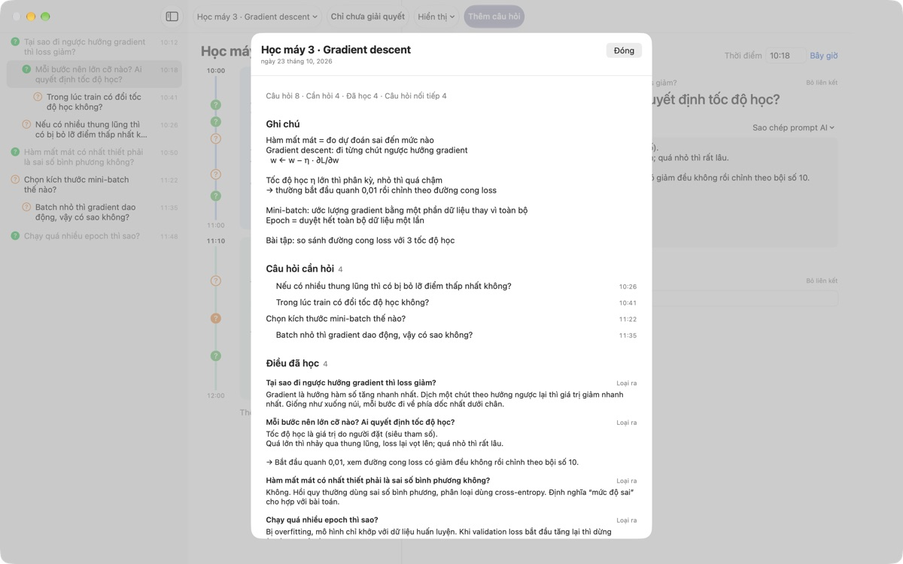
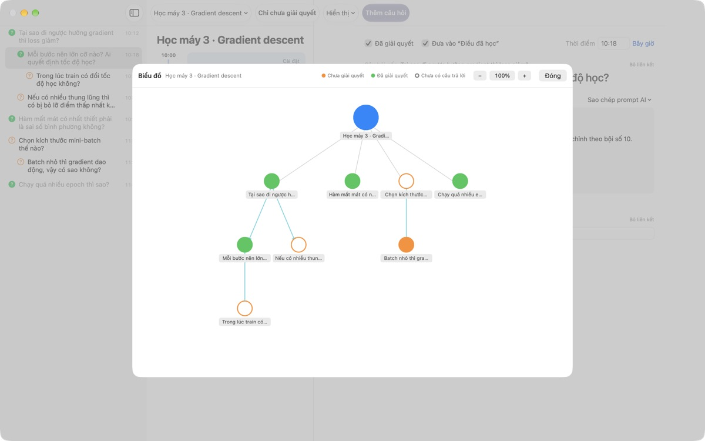

Đừng để thắc mắc trên lớp
trôi mất nữa
Nhấn ⌘⇧N, gõ một dòng, câu hỏi sẽ nằm cạnh ghi chú của đúng phút đó. Bạn cứ nghe tiếp, câu trả lời tìm sau.
Dành cho macOS 14 trở lên. Không cần tài khoản, mọi thứ ở lại trên máy Mac này.

Thử ngay tại đây
Bạn đang ngồi giữa buổi học máy học. Gõ một câu hỏi rồi lưu: dấu ? hiện ra cạnh khối của giờ đó. Đổi giờ sang ngoài các khối, một khối mới sẽ được tạo để chứa nó.
Hết buổi học rồi, bạn còn nhớ câu hỏi của mình không?
Vừa kịp nghĩ "khoan, sao lại thế?" thì giảng viên đã sang ý khác. Dấu hỏi ghi vội bên lề chẳng còn nhớ thuộc phần giải thích nào, và câu hỏi cứ thế bỏ ngỏ. LectureQ gắn mỗi câu hỏi vào ghi chú của đúng lúc đó và giữ nó trước mắt bạn cho đến khi bạn hiểu ra.
Hỏi mà không lỡ câu tiếp theo
Mở cửa sổ nhập bằng Thêm câu hỏi trên thanh công cụ hoặc ⌘⇧N. Giờ được điền sẵn. Return để lưu, ⌘Return để lưu và sẵn sàng cho câu tiếp theo.
Mỗi câu hỏi hiện thành dấu ? cạnh khối thời gian của nó, nên sau này bạn thấy ngay nó xuất phát từ đoạn nào của bài giảng.

Câu hỏi đã giải quyết thành điều bạn học được
Viết câu trả lời bằng lời của mình, đánh dấu đã giải quyết, câu hỏi sẽ vào Điều đã học trong phần tóm tắt. Những câu còn bỏ ngỏ nằm lại ở Câu hỏi cần hỏi, nên danh sách cho buổi sau tự hình thành.Sao chép prompt AI trong chi tiết câu hỏi đặt sẵn vào bộ nhớ tạm một prompt có tên bài giảng và ghi chú của lúc đó. Chỉ cần dán vào dịch vụ AI bạn vẫn dùng.

Thấy được mạch suy nghĩ của mình
Câu hỏi nối tiếp xếp thụt lề dưới câu hỏi đã sinh ra nó, và biểu đồ nối chúng bằng mũi tên. Bấm vào một nút để đi thẳng tới câu hỏi đó.
Ở Trạng thái học tập, bạn ghi lại mình đang ở đâu, muốn đạt tới đâu khi kết thúc khóa học và muốn học gì, rồi so sánh.

Bắt đầu chỉ với ba bước
- 1
Tạo bài giảng
Từ menu bài giảng bên trái thanh công cụ, hoặc nhập một cuộc trò chuyện lưu dạng Markdown.
- 2
Ghi ngay khi nảy ra
Nhấn
⌘⇧N. Một dòng là đủ, giờ đã điền sẵn. - 3
Trả lời sau
Viết câu trả lời rồi bấm vào ? để đánh dấu đã giải quyết. Nó chuyển sang Điều đã học.
Phím tắt
- ⌘⇧N
- Thêm câu hỏi
- Return
- Lưu
- ⌘Return
- Lưu và viết câu tiếp theo
- Esc
- Hủy
- ⌘1
- Tóm tắt: câu hỏi cần hỏi, điều đã học, ghi chú
- ⌘2
- Biểu đồ: câu hỏi gốc và câu hỏi nối tiếp
- ⌘3
- Khối thời gian: khối của mọi bài giảng theo thứ tự
- ⌘4
- Trạng thái học tập
- ⌘+ · ⌘- · ⌘0
- Chữ lớn hơn, nhỏ hơn, cỡ mặc định
Tất cả cũng có trong menu Hiển thị.
Mọi tính năng đều miễn phí
Miễn phí
- Ghi câu hỏi nhanh và ghi chú theo khối thời gian
- Câu hỏi nối tiếp và biểu đồ
- Tóm tắt, tổng quan khối thời gian và Trạng thái học tập
- Prompt AI năm bước, sao chép vào bộ nhớ tạm
- Nhập cuộc trò chuyện từ Markdown
Ủng hộ nhà phát triển
- Nếu thấy hữu ích, bạn có thể gửi một khoản tip nhỏ trong Cài đặt
- Tip không mở khóa thêm tính năng nào
Có tip hay không, mọi thứ vẫn hoạt động như nhau.
Không quảng cáo, không tài khoản. Ghi chú của bạn ở lại trên máy Mac này.
Câu hỏi thường gặp
Màu của dấu ? có nghĩa gì?
Trong danh sách, vòng tròn cam rỗng là câu hỏi chưa giải quyết, vòng tròn xanh lá đặc là đã giải quyết. Bấm vào ? để chuyển đổi, và bật Chỉ chưa giải quyết trên thanh công cụ để chỉ xem những câu còn mở. Cạnh khối thời gian, màu cho biết câu hỏi đã giải quyết chưa, còn vòng tròn đặc nghĩa là đã có câu trả lời.
Khối thời gian hoạt động thế nào?
Bấm Thêm khối thì một khối mới bắt đầu ngay lúc đó và khối trước kết thúc tại đó. Nếu bạn ghi câu hỏi vào giờ chưa có khối nào bao phủ, một khối sẽ được tạo quanh nó. Dùng Cài đặt ở góc trên bên phải của khối để đổi màu, giờ bắt đầu, độ dài hoặc xóa khối. Nếu bạn tự xóa một khối, bài giảng đó sẽ thôi tự tạo khối.
"Đã giải quyết" và "Điều đã học" khác nhau thế nào?
Khi đánh dấu Đã giải quyết trong chi tiết câu hỏi, bạn cũng chọn có tính nó vào Điều đã học hay không. Ở đó chỉ có những câu đã giải quyết mà bạn đưa vào. Bạn cũng có thể bỏ ra hoặc đưa lại từ phần tóm tắt, câu trả lời vẫn được giữ nguyên.
Prompt AI hoạt động thế nào?
Trong chi tiết câu hỏi, mở Sao chép prompt AI cạnh ô Trả lời và chọn một bước: Trau chuốt câu hỏi, Tìm câu trả lời, Hỏi vặn câu trả lời, Rút ra câu hỏi nối tiếp hoặc Nhờ chấm điểm câu trả lời của tôi. Một prompt gồm tên bài giảng, ghi chú lúc đó, trạng thái học tập và câu hỏi gốc sẽ được sao chép vào bộ nhớ tạm. Hiện nội dung prompt đang bằng tiếng Hàn; hầu hết dịch vụ AI vẫn hiểu được, và bạn có thể yêu cầu trả lời bằng tiếng Việt. Muốn được chấm điểm thì trước hết bạn phải tự viết câu trả lời. Ứng dụng không bao giờ tự kết nối với dịch vụ AI.
Tôi có thể nhập cuộc trò chuyện lưu dạng Markdown không?
Chọn Nhập từ Markdown… trong menu bài giảng. # Tiêu đề thành tên bài giảng; trong mỗi ## Mục, câu hỏi đầu là câu hỏi gốc, các câu sau là câu hỏi nối tiếp. Lời của người nói đầu tiên trong tệp thành câu hỏi, lời của người khác thành câu trả lời cho câu hỏi ngay trước đó. Tệp gốc không bị thay đổi.
Làm sao xóa một câu hỏi hoặc bài giảng?
Bấm chuột phải vào câu hỏi trong danh sách và chọn Xóa. Với bài giảng, dùng Xóa bài giảng hiện tại trong menu bài giảng; câu hỏi và khối của nó cũng bị xóa theo. Không thể hoàn tác, nên hãy sao lưu những gì quan trọng trước.
Dữ liệu được lưu ở đâu, sao lưu thế nào?
Mọi thứ ở lại trên máy Mac này và không được tải lên đâu cả. Để sao lưu, thoát ứng dụng rồi sao chép nguyên thư mục ~/Library/Containers/com.lectureq.LectureQ/Data/Library/Application Support/LectureQ/ cùng các tệp -wal và -shm. Ứng dụng chỉ gửi thống kê sử dụng ẩn danh như phiên bản và những ngày đã mở, không bao giờ gửi nội dung bạn viết.
Chữ nhỏ quá.
⌘+ để phóng to, ⌘- để thu nhỏ, ⌘0 để về cỡ mặc định. Khoảng chỉnh từ 85% đến 200% và được ghi nhớ.
Dùng được trên những máy Mac nào?
Mọi máy Mac chạy macOS 14 trở lên. Mã nguồn công khai trên GitHub tại M1zz/LectureQ.
Có gì đó không chạy. Tôi báo cho ai?
Gửi phản hồi từ Cài đặt của ứng dụng (⌘,) hoặc viết thư tới địa chỉ bên dưới. Hãy cho biết phiên bản macOS và bạn đang làm gì lúc đó để chúng tôi kiểm tra nhanh hơn.
Có câu hỏi hay góp ý? Viết cho mizzking75@gmail.com.